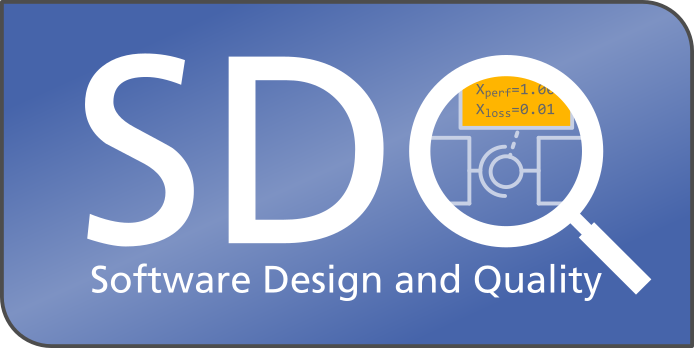

Vorlesungen — Lesefassungen
Willkommen im ersten Semester
Wie Java verwenden
Primitive Datentypen und Variablen
Ein- und Ausgabe
Operatoren und Ausdrücke
Kontrollfluss und Schleifen
Methoden
Git
IntelliJ IDEA einrichten
Code Katas